任何一门自然科学理论的建立，都必须依据大量的实验或观测事实。宇宙学也是这样。在它由神话传说逐步演变为科学的漫长历程中，正是不断积累的大量观测事实，使人们的传统宇宙观不断发生变革，才发展为今天的现代宇宙学理论。因此，在具体讨论宇宙学理论模型之前，我们先把建立宇宙学模型所必须依据的基本观测事实归纳一下。
星系是宇宙大尺度结构的基本组元。因此，大规模的星系巡天对于了解宇宙结构是一项重要的基础性工作。最早的星系巡天开始于20世纪初，至1932年得到第一本巡天星系表，包含全天亮于13等的1250个星系。此后，星系巡天工作不断扩大和深入，但真正获得大规模进展还是自20世纪60～70年代开始。当时南北半球各有一台1.2m口径的施密特望远镜，进行大规模的光学巡天观测，其观测到的最暗星等已达 22^{m}\sim23^{m} 。施密特望远镜不仅视场大，一次可观测多个星系，而且可以配置物端棱镜拍摄光谱，从而获取星系距离的信息。与此同时，射电巡天也迅速发展，比较著名的有英国剑桥大学和美国NRAO（国家射电天文台）的甚大阵(VLA)巡天观测，发现的河外射电源数目超过百万。除地面观测外，空间卫星的观测也大大延伸了人们的视野，并把巡天扩大到更多波段。例如红外天文卫星IRAS观测了几十万个红外源，伦琴卫星ROSAT对X射线源的巡天观测以及COS-B和CGRO卫星对γ射线源的巡天观测，也都获得了大量的高能射线源的观测数据。
巡天观测可以有不同的方式。如果获知了星系距离的信息，则哈勃空间望远镜的深空观测可以看作是一维巡天，即它对靠近大熊星座的一个很小的视场所做的大纵深观测，拍摄到的最暗星等达 30^{m} （见图7.9b）。还有一种巡天方式是对天空上的一个狭窄长条区域做深度观测，相当于在天空做大纵深的扇形切片观测，例如英-澳天文台的 2\mathrm{dF}(2^{\circ} 视场)红移巡天(结果见图7.8b)以及哈佛-斯米索尼亚的CfA巡天 (1.5\times 100^{\circ}) 。更大规模的三维巡天是对大面积的天空做深度观测，最典型的例子是美国的SDSS(Sloan Digital Sky Survey)。它用一台 2.5\mathrm{m} 口径的大视场望远镜（见图1.24），包括光度和光谱测量，采用多光纤技术，一次可以测量600个天体，测光星等达 23^{m}\sim 25^{m} ，光谱星等达 18.5^{m} 。我国正在建造的LAMOST望远镜（见图1.25）也属于三维巡天，但光纤数目多达4000根，望远镜的有效口径为 4\mathrm{m} ，各方面的技术指标都超过了SDSS。
大规模星系巡天的结果给我们勾画出了一幅宇宙大尺度结构的图像。在100Mpc左右的尺度上，我们看到超星系团的存在（如图7.8a），这表明宇宙空间的物质分布至少在 100\mathrm{Mpc} 的尺度内是不均匀的。除了超星系团外，还发现宇宙中存在一些星系特别少区域，即巨洞；而在另外一些地方，存在个别密度很大的星系密集区，例如离银河系约 100\mathrm{Mpc} 的宇宙“长城”。当尺度再增大时，例如达到几百Mpc以上，我们就发现星系趋于均匀分布，因而在这样大的尺度上，我们的宇宙就可以看作是均匀、各向同性的了。图7.8b和图7.8c所显示的，就是这样一个结果。
河外星系的谱线红移实际上早在1910年到1920年间就被发现了，而且同一星系整个光谱上各种特征谱线都一致地红移。到1929年，哈勃测量了一批河外星系的距离后，发现星系的谱线红移与其距离之间大致是成比例的（参见图7.10c），即对于距离为的 d 的星系，谱线红移为
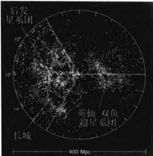
图 7.8a 银河系周围 400 Mpc 范围内星系的分布。图中包括约 4500 个亮星系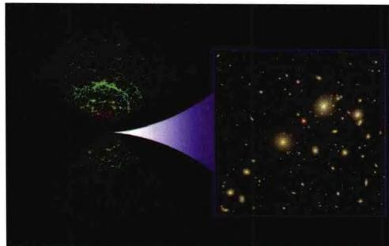
图 7.8b 2dF(2°视场望远镜)观测的天空两个对角方向上的星系分布。星系数目达 22 万 1 千多个, 最大红移为 0.3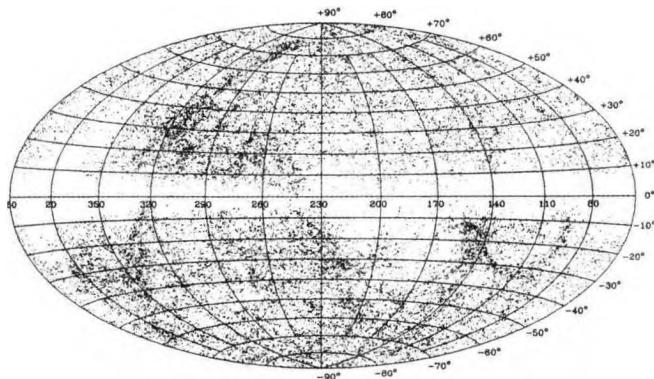
图7.8c 用银道坐标绘出的亮星系在全天空的分布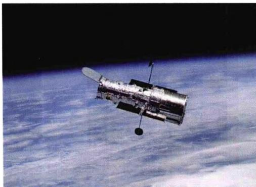
图7.9a 1997年2月第二次维修后的“哈勃”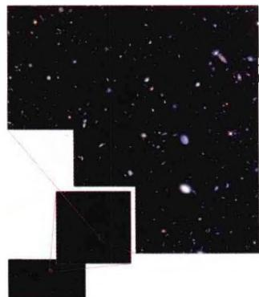
图 7.9b “哈勃”在大熊星座附近所做的深空探测z \equiv \frac {\lambda - \lambda_ {0}}{\lambda_ {0}} = \frac {1}{c} H _ {0} d\tag{7.3.1}
其中 \lambda_{0} 和 \lambda 分别表示谱线的固有波长和观测到的波长， H_{0} 称为哈勃常数。利用多普勒频移与光源速度之间的关系，可以把红移 z 换算成星系的退行速度 v，即
z = \left(\frac {c + v}{c - v}\right) ^ {1 / 2} - 1\tag{7.3.2}
当 v \ll c 时有 z \approx v / c ，故(7.3.1)给出
v = H _ {0} d\tag{7.3.3}
这显然正是与前面(7.2.7)一致的膨胀宇宙的结果。现在习惯上把哈勃常数表示为
H _ {0} = 1 0 0 h \mathrm{km} \mathrm{s} ^ {- 1} \mathrm{Mpc} ^ {- 1}\tag{7.3.4}
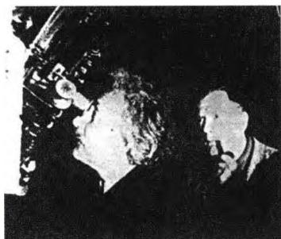
图7.10a 爱因斯坦和哈勃1930年在威尔逊山天文台 图7.10b 哈勃在观测
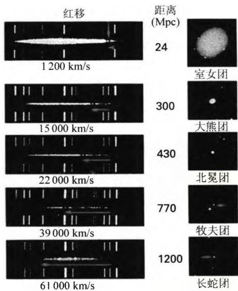
图7.10c 几个典型星系团中的 星系退行速度-距离关系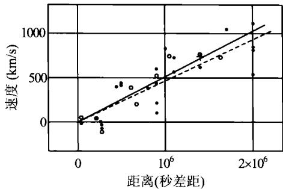
图 7.10d 1929 年的哈勃得到的结果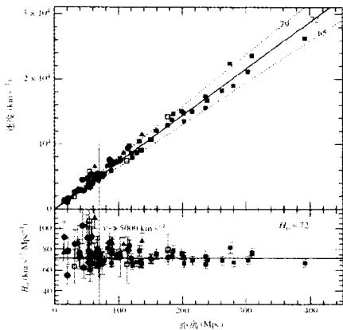
图 7.10e 哈勃关系最近的观测结果，曲线上的数字表示哈勃常数的数值大小（以 km/s/Mpc 为单位）其中 h 是一无量纲的常数。哈勃最早的结果，就是用星系距离-退行速度的关系来表示的（见图 7.10d），但当时测到的星系最大距离只有约 2 Mpc，红移也在 0.003 以下。而现代的结果（图 7.10e）在距离上已大大超过了这个范围。
除了用距离-红移表示外，哈勃关系还可以用视星等-红移来表示。我们知道，天体的视星等、绝对星等与距离之间满足（见(2.5)式）
m = 5 \lg d + M - 5
如果认为所有样本星系的绝对星等大致相同，即 M 可以看作为常数，又由 (7.3.1) 式有 d = cz/H_{0} ，则视星等-红移的关系为
5 \mathrm{lg} z = m + \text {常数}\tag{7.3.6}
图 7.11 给出的就是用视星等-红移表示的哈勃关系。注意前面 v \ll c 的条件，故(7.3.1)以及(7.3.6)只对红移很小时 (z \ll 1) 成立。当 z 较大时，宇宙曲率等宇宙学参数的影响不可忽略，视星等-红移以及距离-红移之间的关系就变得比较复杂。
显然，准确的哈勃关系依赖于哈勃
(7.3.5)
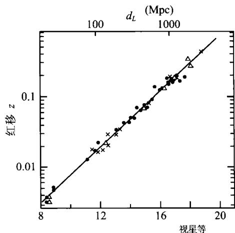
图 7.11 用视星等-红移表示的哈勃关系常数的准确测定，而哈勃常数测定的关键在于，必须利用与红移无关的方法，精密测量出一批星系的距离。历史上，哈勃常数的值曾经几度修正，例如1929年哈勃本人首次给出的值是 H_{0}=500 （以km s ^{-1} Mpc ^{-1} 为单位来表示），1936年考虑到星际消光的影响后，他把这一数值改为526。20世纪50年代至60年代，根据造父变星的分类和大量星系红移的数据分析，德国天文学家巴德(W. Baade)和美国天文学家桑德奇(A. Sandege)分别给出的数值是 H_{0}=260 和 H_{0}=98\pm15 。进入70年代后， H_{0} 的测定方法更加多样化和系统化，但两个在国际上都有重要影响的研究小组却长期持有不同的结论：一组以桑德奇为首，认为 H_{0}=50 ；而另一组以法国天文学家德·沃库勒(G. de Vaucouleurs)为首，坚持认为 H_{0}=100 。这一争论一直持续到哈勃空间望远镜升空，对造父变星进行了大量的精密观测之后。目前，综合WMAP卫星以及其他方法的最新观测数据，得出的哈勃常数值是
H _ {0} = 7 2 \pm 5 \mathrm{km} \mathrm{s} ^ {- 1} \mathrm{Mpc} ^ {- 1} \text {或} h = 0. 7 2 \pm 0. 0 5\tag{7.3.7}
美国天体物理学家伽莫夫是现代热大爆炸宇宙学说的奠基人。早在1946年，他根据哈勃发现的宇宙膨胀的观测结果猜想，如果把时间倒推回去，则宇宙一定经历过一个温度和密度都极高的演化阶段。他计算出宇宙年龄在不到200 s的时候，温度应高达10亿度，这样的高温足以导致核反应很快发生。1948年，他的学生阿尔弗(R. Alpher)、核物理学家贝特(H. Bethe)和他本人共同发表了一篇论文，提出宇宙中绝大部分氦元素就是由这些核反应产生的。由于他们3个人姓名的谐音，这篇论文后来被称为 \alpha\beta\gamma 理论。同年，阿尔弗和赫尔曼(R. Herman)对这个问题做了更严格的分析，指出早期宇宙应该是充满辐射的，这一辐射的遗迹至今还可以作为宇宙微波背景而被探测到，相应的温度大约为绝对温度5 K。但由于传统观念的原因，伽莫夫等人的工作在当时并没有引起人们的重视，稳恒态宇宙学的创始人霍伊尔(F. Hoyle)甚至曾把他们的理论戏称为“大爆炸”，实际上是对这一理论的嘲笑（直到多年以后，当这一理论最终取得了成功时，所有涉及宇宙创生的模型都被正式称为大爆炸宇宙学模型）。
上述情况一直持续到1964年。1964年5月，贝尔电话实验室的两位工程师彭齐亚斯(A. Penzias)和威尔逊(R. Wilson)在美国新泽西州的一个偏远小镇上，把一台号角型天线指向天空，以研究来自天空的无线电噪声。他们这台天线是为卫星通讯而设计的，具有良好的抗干扰性能，能把来自地面的噪声减少在0.3K以下。
当他们开始测量来自天空的噪声时，发现扣除了大气吸收和天线本身的影响后，还有一个3.5 K的微波噪声相当显著。在认真检查了天线的每一个接缝、甚至清除了天线内的一个鸽子窝后，噪声依旧存在。持续一年的观测表明，这种噪声与天线在天空的指向无关，也与地球的周日运动、太阳运动无关。当时彭齐亚斯和威尔逊并不知道伽莫夫等人的工作。他们先是在4080 MHz，即7.35 cm波长上测量，后来又在75 cm到0.3 cm的波段上进行了一系列的测量。当波长大于100 cm时，由于银河系本身有强的超高频辐射，掩盖了来自银河系外的辐射，故不能进行测量。在小于3 cm的波段，只有在0.9 cm至0.3 cm几个窄小的大气窗口上，才能接收到来自地球之外的辐射。波长比0.3 cm更短时，只有到大气层外进行测量了。他们在不同波长处测量的结果，尽管数据点有限，但还是表明这种来历不明的辐射具有黑体辐射的特征，相应的温度为3.5 K。
图7.12a 热大爆炸宇 宙模型的创始者伽莫夫
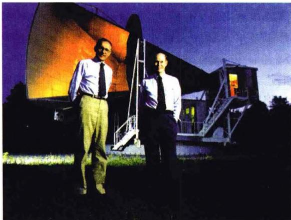
图7.12b 1965年首次发现宇宙微波背景辐射的 彭齐亚斯和威尔逊，背后是他们所用的接收装置几乎与此同时，普林斯顿大学的迪克(R. Dicke)等人正着手制造一台小型天线，来探测理论家们曾预言的残存的宇宙早期热辐射。对于一个5K左右的黑体谱，其主要辐射应集中在微波波段。当迪克小组获知彭齐亚斯和威尔逊的发现后，立即前往访问。在观看了彭齐亚斯和威尔逊的天线设备并与他们一起讨论了测量结果以后，迪克小组便断言，这就是他们所致力寻找的宇宙微波背景辐射。于是，双方商定同时在《天体物理杂志》上发表自己的简讯。迪克小组文章的题目是“宇宙黑体辐射”。彭齐亚斯和威尔逊文章的题目是“在4080 MHz上额外的天线温度测量”，他们在文中宣称：“有效的天顶噪声温度的测量，得出一个比预期高约3.5K的值。在我们观察的限度以内，这个多余的温度是各向同性的，非偏振的，并且没有季节的变化。”
上述两篇简讯发表以后，立即引起了极大的反响。人们期待进一步验证，天线的多余温度是否真正源于宇宙太空背景。这其中最重要的是，热平衡辐射应当是各向同性的，而且不同频率辐射的能量密度分布应遵从普朗克定律。各向同性已经被彭齐亚斯和威尔逊的观测证实了，因此这一多余温度相应的辐射是否能在不同波长上符合普朗克定律，就成为确认该辐射是否是宇宙学起源的关键。
许多天文学家使用地面和空间的各种探测设备，在各个波段对该辐射做了细致和高精度的测量。1965年，迪克小组的罗尔(P. Roll)和威尔金森(D. Wilkinson)完成了在3.2 cm波长上的测量，结果是 3.0 \pm 0.5 K。不久，豪威尔(T. Howell)和谢克沙夫特(J. Shakeshaft)在20.7 cm上测得 2.8 \pm 0.6 K，随后彭齐亚斯和威尔逊在21.1 cm上测得 3.2 \pm 1 K。从3 K黑体辐射的能谱来看，辐射强度的高峰应在0.1 cm附近，但这一波长处在远红外范围，大气对它的吸收很强烈。于是康奈尔大学的火箭小组和麻省理工学院的气球小组分别进行了观测，并于1972年证实，远红外区域的背景辐射具有3 K的黑体辐射谱性质。1975年，伯克利加州大学伍迪(D. Woody)领导的气球小组确定，从0.25 cm到0.06 cm波段的背景辐射，也处于2.99 K黑体温度的分布曲线范围内。至此，所有的观测数据都已经肯定，背景辐射来自宇宙，并具有大约3 K温度的黑体谱。这就最后确认了3 K宇宙背景辐射的存在，从而使大爆炸宇宙学得到了决定性的观测支持。因为彭齐亚斯和威尔逊的发现大大推动了宇宙学的进展，他们荣获了1978年的诺贝尔物理学奖。宇宙微波背景辐射(CMB)的发现，是继哈勃发现星系整体退行后，观测宇宙学取得的第二个巨大成就。
鉴于宇宙背景辐射的极端重要性，NASA决定发射专用卫星对它进行持续研究。1989年11月18日，COBE(Cosmic Background Explorer，即宇宙背景辐射探测器)卫星(见图7.14b)发射升空，其研究团队(包括各种技术支持人员)约有1000人，领导者是约翰·马瑟(J. Mather)和乔治·斯穆特(G. Smoot)。COBE卫星主要有3个组成部分：1)远红外绝对分光测量仪，能以 10^{-3} 的精度测量宇宙背景辐射的黑体谱谱形；2)较差微波辐射计，能以 10^{-6} 的精度测量微波背景辐射的各向异性；3)弥漫红外背景实验仪，能探测 1\sim3\mu m 波段的弥漫红外背景，可以对来自早期宇宙的弥漫红外光(宇宙第一代恒星、星系发出的辐射)进行极高灵敏度的搜寻。发射后的第二年即1990年，COBE卫星就得到了宇宙微波背景辐射十分理想的黑体辐射谱形(图7.15c)，它与普朗克的黑体辐射定律高度符合，相应的温度是
T = 2. 7 3 6 \pm 0. 0 1 6 \mathrm{K}\tag{7.3.8}
1992年，COBE又测出了宇宙微波背景辐射的各向异性以及温度涨落的空间分布。各向异性中的偶极各向异性(见图7.13)是由于地球的空间运动所引起，即地球相对于弥漫全宇宙的背景辐射运动。在地球上看来，运动前方的背景辐射温度
会略高一些，而背向地球运动方向的辐射温度会略低一些，这也就是我们熟知的多普勒频移。由偶极各向异性得出，太阳相对于宇宙背景辐射的运动速度约为370 km/s，方向为 \alpha \approx 168^{\circ}, \delta \approx -7^{\circ} 。扣除掉偶极各向异性后，全空间的背景辐射温度涨落（见图7.15a）幅度很小，仅为
\frac {\Delta T}{T} \simeq 1 0 ^ {- 5}\tag{7.3.9}
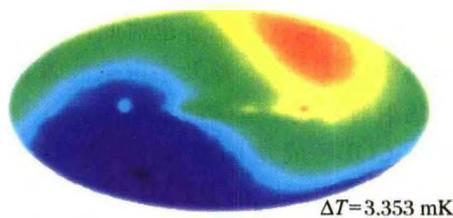
图7.13 COBE测到的宇宙微波背景辐射的偶极各向异性这表明宇宙背景辐射是高度各向同性的。另一方面，微小的温度涨落正是宇宙极早期微小的密度涨落的反映。今天的宇宙结构，就是由这些微小的密度涨落演化而来，可以说，它们是宇宙物质积聚成恒星和星系的“种子”。正如后来诺贝尔奖评委会提供的介绍材料中所说的那样，“如果没有这样的涨落，那么今天的宇宙很可能完全不是现在这个样子，宇宙中的所有物质也许始终像淤泥一样均匀分布。”因此，通过背景辐射温度涨落的测量，可以回溯宇宙“婴儿时代”的场景，并深入了解宇宙中恒星和星系的形成过程。
总之，COBE实现了对宇宙微波背景辐射的精确测量。它发现了背景辐射严格的黑体谱形式，从而确认了宇宙早期是一个热宇宙，为宇宙起源的大爆炸理论提供了最有力的支持。背景辐射的高度各向同性表示，宇宙中物质的分布是高度各向同性的，这与上面星系大尺度分布均匀各向同性的结果一起，就为标准宇宙学模型的主要框架——宇宙均匀各向同性——提供了最关键的观测证据。同时，COBE关于背景辐射微小各向异性的测量结果，对早期宇宙密度扰动的研究也是一个巨大的推动。正是由于这些成就，COBE团队的领导者马瑟和斯穆特荣获了2006年诺贝尔物理学奖。诺贝尔奖评委会的公报说，他们的工作使宇宙学进入了“精确研究”的时代。霍金也对此评论说，COBE的研究成果堪称20世纪人类最重要的科学成就之一。涉及宇宙微波背景辐射的工作两次获得诺贝尔奖，可见微波背景辐射对现代宇宙学的重要性。
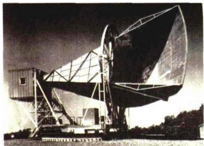
图7.14a 彭齐亚斯和威尔逊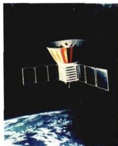
图7.14b COBE卫星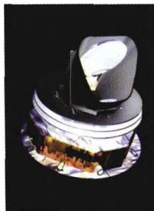
图7.14c PLANCK卫星在 COBE 成功的基础上, WMAP 卫星 (Wilkinson Microwave Anisotropy Probe, 见图 1.29b) 也于 2001 年 6 月 30 日升入太空, 对宇宙微波背景辐射进行更精确的观测, 它给出的宇宙背景辐射温度的最新结果是
T = 2. 7 2 5 \pm 0. 0 0 2 \mathrm{K}\tag{7.3.10}
今后不久，欧洲的“普朗克”卫星（PLANCK，图7.14c）也将发射升空，有望进一步提高宇宙背景辐射的测量精确度。图7.15b显示的是WMAP卫星2003年巡天测量的结果，与图7.15a所示COBE的结果相比较，我们看到WMAP的分辨率比COBE有了显著的提高。
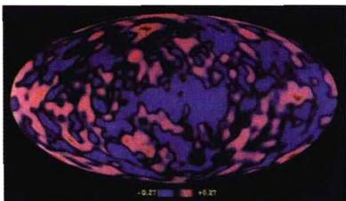
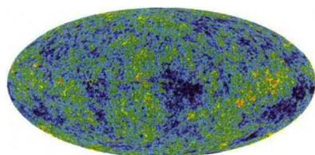
图 7.15a COBE 探测到的宇宙微波背景辐射的温度涨落 图7.15b WMAP探测到的宇宙微波背景辐射的温度涨落
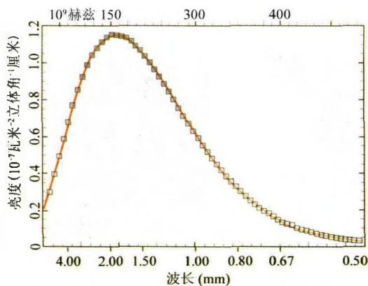
图 7.15c COBE 探测到的宇宙微波背景辐射谱形天然的化学元素有90多种，但它们在自然界中的含量相差十分悬殊。有的元素十分丰富，有的却极其稀少。地学界很早就开始测量地球上各种元素重量（质量）的百分比，这就是元素的丰度。天体物理学也同样关注元素的丰度，一方面是为了了解宇宙中化学成分的总体构成，另一方面则是为了探究化学元素本身的起源。现在我们知道，元素的丰度与恒星、星系乃至整个宇宙的演化历史有关，因此，通过对目前宇宙元素丰度的观测，我们就可以更深入地了解宇宙中各种天体包括宇宙自身的演化历史。
初看上去，我们的地球只位于浩瀚宇宙中的小小一隅，从这里去研究整个宇宙的化学组成是无法做到的。但是，尽管存在实际上的巨大困难，科学工作者还是通过许多办法，积累了关于宇宙中元素丰度的大量数据。首先，我们可以从地球开始，分析地壳、海洋和大气的化学组成，并考虑到一部分物质会散失到空间中去，以及各种元素在地球内部可能的重新分布，就可以计算出地球在形成时各种元素的比例。其次，天外飞来的陨石，应该是远古时代的遗物，它们所经历的化学变化要比地球物质小一些，可以更真实地反映宇宙化学成分的情况。第三，宇航员从月球上、空间飞行器从其他行星上带回来的岩石样品或地质分析资料，也是重要的实物证据。第四，对于太阳系以外的天体以及星云，可以通过光谱中的元素谱线（包括射电谱线以及分子谱线）及其强度，相当准确地了解天体表面的化学成分，然后再结合理论模型得到天体内部的元素丰度。最后，来自宇宙深处的宇宙射线，可以给我们带来远至银河系以外的物质组成的信息。
综合所有这些资料,科学工作者发现,由不同途径得到的元素丰度结果大体相同,宇宙中不同地点的同类天体化学组成也很相近。例如,表7.1给出了一些典型星系中的氦丰度，显然它们的大小相差不多。总体来看（参见图7.16），宇宙中最丰富的元素是氢，它占宇宙原子总数的93%，质量的76%；其次是氦，大约占原子总数的7%和质量的23%。仅这两种元素就占了宇宙原子总数的几乎100%，质量
表 7.1 典型星系的氮丰度
| 星系名称 | Y | 星系名称 | Y |
|---|---|---|---|
| 银河系 | 0.29 | NGC4449 | 0.28 |
| 小麦云 | 0.25 | NGC5461 | 0.28 |
| 大麦云 | 0.29 | NGC5471 | 0.28 |
| M33 | 0.34 | NGC7679 | 0.29 |
| NGC6822 | 0.27 |
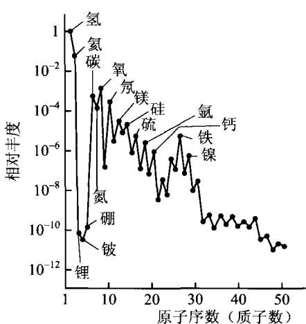
图7.16 观测到的宇宙中 元素丰度的相对分布的 99\% 。剩下微不足道的比例，就是从锂到铀的所有元素，而且最重的那些元素·按原子数目只有全部原子数目的亿分之一，按质量计也只有百万分之一。此外，一般说来，元素的丰度随着原子量的增加而下降。上述结果表明了，宇宙中各处的物质在元素组成方面有着统一性。由此看来，这些元素也应当有一个统一的起源和演化的模式。第3章中曾介绍过，到铁族为止的重元素，是由恒星内部的核反应产生的，而铁之后的重金属元素只能在超新星爆炸的过程中形成。我们下面将谈到，像氦、锂、铍、硼这些轻元素，它们的起源只能是宇宙早期的核合成。
宇宙年龄的估计与宇宙中各种天体的年龄测定密切有关，因为宇宙的年龄必定要大于最古老天体的年龄。我们在第2章中介绍过恒星和星团的年龄估计，其中球状星团的年龄估计用的是星团赫罗图（见图2.22），根据图上转向点的位置，就可以得出星团年龄的大小。目前，宇宙中最古老的球状星团的年龄为130～170亿年左右，这就给出宇宙年龄的下限。
除了星团赫罗图方法外，还可以利用放射性同位素方法。如果能够证明一切化学元素的年龄是有限的，则它们的年龄上限就是天体年龄的上限，也就是宇宙年龄的下限。化学元素曾在很长时间里被看作是物质的基元，是永恒不变的。例如，直到1907年，尽管放射性衰变的证据已有很多，当时最有名望的一些物理学家（例如开尔文）仍然坚持认为，化学元素是不会有演化的。1908年卢瑟福发表了放射性衰变理论，并计算出铀的转化周期为10亿年以后，元素演化的观点才被科学界广泛接受。
放射性衰变的规律发现后，卢瑟福很快意识到，可以用元素的衰变作为测量时间的一种“钟”。今天的同位素年代学就是这样产生的。例如， ^{14} C 被广泛应用于考古学，是因为它的半衰期为5570年，与人类文明史的时间长度差不多，故可以用来有效地鉴定各种古物的年代。但宇宙的年龄有100亿年的量级， ^{14} C的半衰期就远远不够了，因此必须寻找半衰期为几十亿、上百亿年的元素才行。具有这样长半衰期的放射性元素之一就是铀。现在知道，铀有两种同位素，即 ^{235} U和 ^{238} U，半衰期分别为7亿年和45亿年。因为 ^{235} U的半衰期比 ^{238} U短，所以 ^{235} U比 ^{238} U更快地衰变掉，这就造成现在地球上的铀中，主要成分是 ^{238} U，而 ^{235} U的含量很少，不到 ^{238} U的百分之一，准确地说是 7.25\times10^{-3} 。值得注意的是，这个比值对于地球、月球上的岩石采样，以及对于天外飞来的陨石采样都是一样的，这说明太阳系的天体有共同的形成时刻。根据 ^{235} U/ ^{238} U的值并结合铅的丰度（铅是铀的衰变产物）推算出，地球的年龄是46亿年，这也被认为是太阳系的年龄。
但是，46亿年只代表太阳系中岩石的年龄，并不是铀本身的年龄，因为太阳系自己不会产生出铀元素。由此推测，太阳系诞生之前，在太阳系将形成的位置附近，一定曾发生过超新星爆发，使得该处的星际气体中含有了重元素，这些气体就是后来形成太阳系的原始材料。我们地球上现在开采出来的铀，就是那时超新星爆发的遗物，它们的年龄肯定比太阳系的年龄还要大。超新星爆发时所产生的重元素丰度，是可以计算出来的，例如那时的 ^{235}U/^{238}U\simeq1.65 ，再结合今天的观测值 ^{235}U/^{238}U=7.25\times10^{-3} ，就可以马上算出，铀生成的时间大约在66亿年以前。
除了把 ^{235} U/ ^{238} U作为宇宙考古的“化石”外，还采用 ^{232} Th/ ^{238} U, ^{187} Re/ ^{187} Os等其他放射性同位素丰度比来做类似的分析和推算。为了使测量结果具有代表性，大都选用陨石或从月球上取来的样品。所有这些结果表明，太阳系大约形成于46亿年以前，而形成太阳系中重元素的那些超新星爆发，大约是在距今50亿到110亿年前发生的，而且其中至少有一次是在太阳系诞生之前的1～2亿年前发生的。所以，我们银河系的寿命至少已有110亿年之久，这个年龄估计与球状星团的年龄估计是一致的。这样看来，我们有理由认为，宇宙中所有的化学元素都是在200亿年之内产生的，因而我们宇宙的年龄也应当在200亿年以内。
白矮星的年龄也可以用来估计宇宙年龄的大小。白矮星内部的核燃料已经耗尽，内部结构不再发生变化，也就没有新的能量产生。它发出辐射靠的是自身热能的消耗，因此星体的温度和光度将逐渐降低，即白矮星将逐渐变冷变暗。光度和温度的下降速率是可以根据理论模型计算出来的，例如，对质量为 M 的白矮星，光度随时间的变化为
L \propto M t ^ {- 7 / 5}\tag{7.3.11}
因此白矮星的光度函数应有一个锐截止，即年龄超过一定限度时光度急剧下降，这个结果在银河系银盘部分的恒星中已经观测到了。由这一观测结果给出白矮星的年龄为 9.7 \pm 1.3 Gyr ( 1 \, Gry = 10^{9} 年 = 10 亿年)。但宇宙的年龄肯定要比白矮星长，因为白矮星形成之前，恒星还要经历演化，而且该恒星也是在宇宙诞生很久之后才形成的。综合这几方面的考虑，由白矮星的观测结果推算出来的宇宙年龄大约在 15 \pm 2 Gyr，即 130 \sim 170 亿年。
最后，由哈勃常数的观测值也可以大致估计宇宙的年龄。假设对任何给定的星系，由(7.3.3)给出的退行速度 v 保持不变，把这样一个星系的运动倒推回去，回到会聚点（出发点）的时间是
t \approx d / v = H _ {0} ^ {- 1}\tag{7.3.12}
这一时间可以代表宇宙的年龄,称为哈勃年龄。由哈勃常数目前的观测值求得,哈勃年龄是
t _ {H} \equiv H _ {0} ^ {- 1} \simeq 9. 7 8 h ^ {- 1} \mathrm{Gyr} \Rightarrow H _ {0} ^ {- 1} \simeq 1 3. 6 \mathrm{Gyr} (h \simeq 0. 7 2)\tag{7.3.13}
这与上述几方面的估计结果是一致的。但实际的宇宙年龄并不简单地就是哈勃年龄，这里面主要有两个原因（我们将在后面再仔细讨论）：一是哈勃常数本身并不真的是“常数”，而是随时间变化的，星系过去的退行速度要比现在大，这就使得宇宙年龄变得比哈勃年龄小；二是近年来发现，宇宙在加速膨胀，这将使宇宙年龄变得比不加速膨胀时大。这两方面的影响加起来，最后得到的宇宙年龄大约和(7.3.13)给出的哈勃年龄相近。
按照狄拉克20世纪30年代的看法，宇宙应当是正、反物质对称的。他认为，地球和太阳系中，电子和质子在数量上占优势，而有些星球的情况可能会反过来，它们主要由正电子和反质子组成。在整个宇宙中，可能每种星体各占一半。但这两类星体有着完全相同的光谱，用现有的天文学方法，无法辨别这两类星体。狄拉克的上述看法是基于自然界严格对称的考虑。但自从李政道等1957年发现弱相互作用中宇称不守恒（即微观粒子过程的空间反演对称性被破坏了，致使中微子只有左旋而没有右旋，反中微子只有右旋而没有左旋）以来，已陆续发现许多对称性被破坏的情况，例如弱相互作用中的电荷宇称（即 C 宇称）、奇异数等都不守恒，粲夸克在通过弱作用衰变时，粲量子数也不守恒。20世纪70年代开始兴起的大统一理论，甚至认为强作用的色荷可以变为弱作用的色荷，使重子（质子、中子和超子）可以变为介子或轻子，这样连重子数也都不守恒了。当然，大统一理论到现在还没有得到公认，虽然它预言的质子寿命 10^{29} \sim 10^{31} 年，与实验定出的下限值 2 \times 10^{30} 很相近，但它预言的新的规范粒子（X粒子），不同理论估算出的X粒子的质量相差甚远，可见理论还不够成熟。
无论如何，现在人们对于严格对称的看法已经有了很大改变，与严格对称相比，人们更相信“对称中有破缺”才可能是自然界中发生的真实情况。因此，正反物质今天的不对称也就可以理解了，我们将在下面讨论宇宙的热历史时再来谈到这个问题。事实上，人们已经做过许多观测，来确定宇宙中的反物质到底有多少。这其中主要的根据是，如果宇宙中存在大量的反物质，则当这些反物质粒子与通常的（正）物质粒子相遇时，就会湮灭而产生高能辐射。例如，即使是质量最小的正负电子遇到一起，它们湮灭后会产生511 KeV的光子，位于γ射线波段。其他质量更大的正反粒子湮灭后，会产生能量更大的γ光子。如果宇宙中的正反物质真如狄拉克设想的那样是对称的，则在正物质区域和反物质区域的交界处（这样的交界区域应当有很多），会产生大规模的γ射线辐射。这样，通过广泛搜寻宇宙γ射线辐射，就可以大致估计反物质存在的多少。但至今为止，对宇宙射线的观测表明，整个太阳系中的反物质含量不会超过普通物质的万分之一；对星系团的观测表明，反物质的含量不会超过物质含量的百万分之一。对更大尺度的宇宙空间的观测，结论也大都相似，即反物质的含量非常之少，也就是说反粒子的数量非常之少。对于占宇宙可见物质总量绝大部分的重子来说，如果用 n_{B} 和 n_{B} 分别来表示反重子和重子的数密度，上述结论可以简单地表示为
n _ {B} / n _ {B} \ll 1\tag{7.3.14}
宇宙中数量最多的光子是宇宙背景辐射光子。因为背景辐射是黑体辐射，我们很容易计算出它的光子数密度。根据辐射热力学，黑体辐射的能量密度是
\rho_ {r} = a _ {r} T ^ {4}\tag{7.3.15}
其中 a_{r} = 8\pi^{5}k^{4} / 15c^{3}h^{3} = 7.57\times 10^{-15}\mathrm{erg / (cm^3*K^4)} 是辐射密度常数。代入宇宙背景辐射的温度 T\simeq 2.725\mathrm{K} ，则有
\rho_ {r} \simeq 4. 1 7 \times 1 0 ^ {- 1 3} \mathrm{erg} \cdot \mathrm{cm} ^ {- 3} \simeq 4. 6 4 \times 1 0 ^ {- 3 4} \mathrm{g/cm} ^ {3}\tag{7.3.16}
对于温度为 T 的黑体辐射，光子的平均能量为 kT，当 T \approx 2.7 \, K 时 kT \approx 3.7 \times 10^{-16} \, erg 。这样，宇宙背景辐射的平均光子数密度就是
n _ {r} \approx \rho_ {r} / K T \approx 1 0 ^ {3} / \mathrm{cm} ^ {3}\tag{7.3.17}
另一方面，WMAP卫星最近的观测结果表明(见图7.17)，按能量计算，重子物质大约只占宇宙总能量的4%，折合成质量后的密度大约是
\rho_ {B} \approx 4. 2 \times 1 0 ^ {- 3 1} \mathrm{g/cm} ^ {3}\tag{7.3.18}
按每个重子平均质量 2 \times 10^{-24} g（即大约等于质子的质量）计算，重子的平均数密度为 n_{B} \approx 2 \times 10^{-7} / cm^{3} ，因此最后在数量级上有
n _ {r} / n _ {B} \approx 1 0 ^ {9}\tag{7.3.19}
这的确是一个天文数字。这样大的比例是无法用普通情况下的粒子过程和核反应过程来解释的，只能从早期宇宙中寻找答案。
在上一章中已谈到，除了重子之外，我们的宇宙中还存在大量不发光（即不参与电磁作用）的粒子，即暗物质粒子。暗物质的质量密度比重子物质的质量密度要大很多。据WMAP卫星最近的观测结果(参见图7.17)，目前宇宙中总的物质（即光子以外的所有粒子，或近似地，重子与暗物质粒子加起来)质量密度为
\rho_ {m} \simeq 2. 6 \times 1 0 ^ {- 3 0} \mathrm{g/cm} ^ {3}\tag{7.3.20}
与(7.3.18)相比较,可见重子物质的质量只占宇宙总物质质量的大约16%。
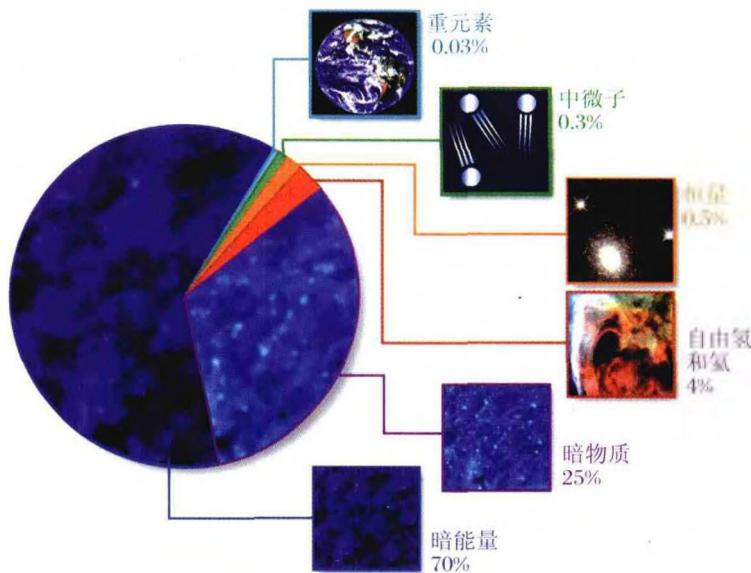
图 7.17 宇宙物质(能量)的组成最后，在本节即将结束时，有必要再重提一下奥尔伯斯佯谬带来的启示。我们在7.2节的开始就谈到了奥尔伯斯佯谬，并由此引发了对不同时空观的讨论。因此，除了上述几个方面的观测事实外，我们还不能忘记这样一个人所共知的观测事实：晴朗无月的夜晚，除了闪烁的群星外，天空的背景是黑的。